2127C40 HYDRAULIC SPEED SELECTION HYDRAULIC ACTUATOR UNIT AND CLUTCH - R R
- Path
- Procedures > 21 GEARBOX UNIT > 2127 HYDRAULIC TRANSMISSION EXTERNAL LINKAGE > 2127C HYDRAULIC GEAR SELECTION SYSTEM > 2127C40 HYDRAULIC SPEED SELECTION HYDRAULIC ACTUATOR UNIT AND CLUTCH - R R
- Kind
- repair procedure (removal / refitting; the operation number is the code)
- Applies to
- engines: 2.0 JTS; all production periods; only with equipment: Smart gearbox
- Interactive page
- https://sloeber94.github.io/elrnDB-aGt/en/#/125001285
Applies to: engines: 2.0 JTS; all production periods
 Removing
Removing
 Refitting
Refitting- Position the vehicle on a lift.
- Place the gear lever in neutral.
- Connect the Examiner diagnostic equipment.
- Select "Alfa Selespeed" on the Examiner.
- Select "Control Units Test" on the Examiner and select "Selespeed Marelli automatic transmission" as the system.
- Press "Active diagnosis" on the Examiner and select "Accumulator depressurization".
- Follow the procedure described on the Examiner.
- Op. 5530B10 BATTERY - R+R
- Op. 5530B52 BATTERY DRIP TRAY/SUPPORT - R.R.
- Op. 4450B02 LEFT FRONT WHEEL R R
- Op. 7055B90 LEFT FRONT WHEEL ARCH LINER - R.R.
- Undo the electro-hydraulic selection gearbox hydraulic circuit fluid reservoir and drain the reservoir using a syringe.
- Disconnect the electrical connection for the hydraulic gear activation unit wiring.
Description | Connector | |
|---|---|---|
1 | Gearbox sensor coupling | See D79 TRANSMISSION SENSOR JUNCTION |
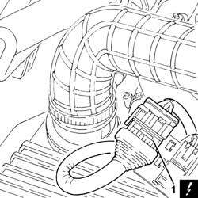
Applies to: engines: 2.0 JTS; all production periods
1. Loosen the band and disconnect the pipe from the electro-hydraulic selection activation hydraulic unit to the fluid reservoir, hydraulic unit side.
2. Undo the connector (2a) and disconnect the pipe from the pump to the gearbox electro-hydraulic selection actuator hydraulic unit (2b), hydraulic unit side.
3. Disconnect the electrical connection from the gearbox output speed sensor.
Description | Connector | |
|---|---|---|
3 | Gearbox output speed sensor | See K77 TRANSMISSION OUTPUT SPEED SENSOR |
4. Disconnect the electrical connection from the reversing light switch.
Description | Connector | |
|---|---|---|
4 | Reversing lights switch | See I20 REVERSING LIGHTS SWITCH |
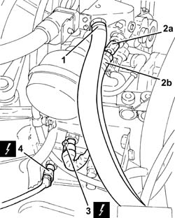
Applies to: engines: 2.0 JTS; all production periods
- Release the clutch push rod cover.
- Undo the locknut (2a) and fully tighten the clutch push rod (2b).
- Retract the clutch push rod and insert the tool.
Description | Code | |
|---|---|---|
3 | Pin | 1.870.753.002 |
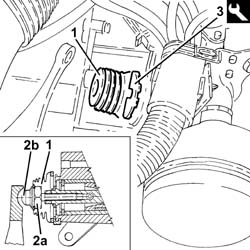
Applies to: engines: 2.0 JTS; all production periods
1. Remove the plug (1a) and fit the tool (1b) in the upper part of the gearbox control shaft housing to lock the selection linkage inside the hydraulic actuator unit.
Description | Code | |
|---|---|---|
1b | Pin | 1.870.753.001 |
Undo the bolt shown (M6 x 110) fixing the electro-hydraulic gear selection hydraulic implementation unit and clutch.
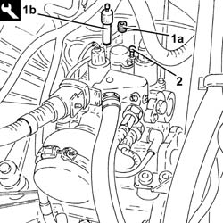
Applies to: engines: 2.0 JTS; all production periods
- Op. 7055B54 UNDER-ENGINE GUARD - R R
- Position a hydraulic jack beneath the gearbox.
- Loosen the bolt securing the gearbox side power unit rigid support to the flexible mounting as necessary.
- Remove the hydraulic jack.
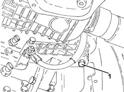
Applies to: engines: 2.0 JTS; all production periods
- Loosen the cap.
- Undo the bolt (M8 x 16) fixing the hydraulic actuator unit to the gearbox control shaft.
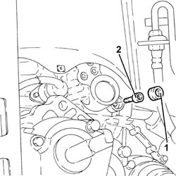
Applies to: engines: 2.0 JTS; all production periods
- Undo the remaining bolts (1a) (M6 x 110) and (1b) (M8 x 30) fixing the electro-hydraulic gear selection hydraulic implementation unit and clutch.
Applies to: engines: 2.0 JTS; all production periods
- Remove the electro-hydraulic gear and clutch selection hydraulic actuator unit and the seal.
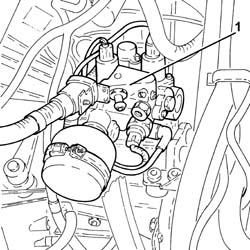
Applies to: engines: 2.0 JTS; all production periods
Refitting
Removing- Check manually that the gearbox shaft slides freely in its housing and that there is grease at the end of the actual shaft; if necessary, renew it.
- FITTING A NEW HYDRAULIC UNIT
1. Undo the cap (1a) on the new unit supplied by the Parts Dept. and make sure that the seal (1b) is present.
2. Place the hydraulic unit back in its housing.
3. Undo the cap (3a) and remove the spacer pipe (3b) fitted by the Parts Dept. to lock the selection linkage inside the hydraulic unit during transit.
4. Fit the tool in place of the spacer pipe removed and tighten it fully.
Description | Code | |
|---|---|---|
4 | Pin | 1.870.753.001 |
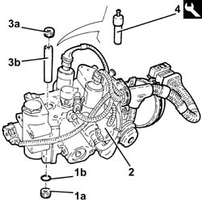
Applies to: engines: 2.0 JTS; all production periods
- FITTING THE HYDRAULIC UNIT REMOVED
- Fit the seal checking that it is intact; if the same hydraulic unit is being refitted on a new gearbox, use the seal that was removed and not the one on the new gearbox.
- Place the hydraulic actuator unit (2a) in position already complete with the tool (2b).
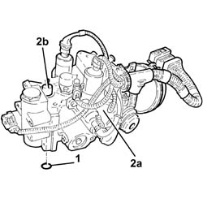
Applies to: engines: 2.0 JTS; all production periods
- Proceed as described below for both the fitting of a new hydraulic unit and for refitting the same hydraulic unit as was removed.
- Fit the new bolts (1a) (M6 x 110) and (1b) (M8 x 30) and tighten fully by hand.
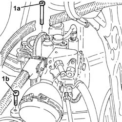
Applies to: engines: 2.0 JTS; all production periods
1. Tighten a new bolt (M8 x 16) (n° 46545861) fixing the gearbox control shaft to the hydraulic actuator unit and tighten it to the recommended torque.
Fastening | Component | Ø | Value (daNm) | |
|---|---|---|---|---|
1 | Bolt | HYDRAULIC ACTUATOR UNIT | M8 | (Gearbox control shaft side) 2.7 - 3.3, daNm |
2. Tighten the cap to the recommended torque.
Fastening | Component | Ø | Value (daNm) | |
|---|---|---|---|---|
2 | Plug | CAP FOR BOLT SECURING GEARBOX CONTROL SHAFT TO HYDRAULIC ACTUATOR UNIT | (Hydraulic actuator unit side) 1.3 - 1.7, daNm |
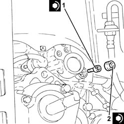
Applies to: engines: 2.0 JTS; all production periods
1. Fit the new bolt (M6 x 110) tightening it fully by hand.
2. Remove the tool
Description | Code | |
|---|---|---|
2 | Pin | 1.870.753.001 |
3. Fit the cap and tighten to the specified torque.
Fastening | Component | Ø | Value (daNm) | |
|---|---|---|---|---|
3 | Plug | CAP FOR TOOL LOCKING HYDRAULIC UNIT SELECTION LINKAGE | (Hydraulic actuator unit side) 5.0 - 6.0, daNm |
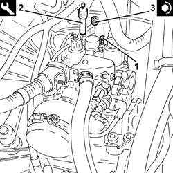
Applies to: engines: 2.0 JTS; all production periods
- Tighten the bolts tightened previously (M6 x 110) and (M8 x 30) to the recommended torque.
Fastening | Component | Ø | Value (daNm) | |
|---|---|---|---|---|
- | Bolt | HYDRAULIC ACTUATOR UNIT | M6 | (Gearbox side) 1.3 - 1.7, daNm |
Fastening | Component | Ø | Value (daNm) | |
|---|---|---|---|---|
- | Bolt | HYDRAULIC ACTUATOR UNIT | M8 | (Gearbox side) 1.3 - 1.7, daNm |
- Apply Tutela MRM2 grease to the clutch lever in the push rod housing.
1. Adjut the clutch control push rod (1a), zero the clearances by placing the push rod in contact with the lever (1b) and turn through three further revolutions towards the lever.
2. Tighten the locknut the recommended torque.
Fastening | Component | Ø | Value (daNm) | |
|---|---|---|---|---|
2 | Nut | CLUTCH CONTROL PUSH ROD LOCKNUT | 0.5 - 0.7, daNm |
3. Remove the tool (3a) locking the clutch control push rod travel and fit the cover (3b).
Description | Code | |
|---|---|---|
3a | Pin | 1.870.753.002 |
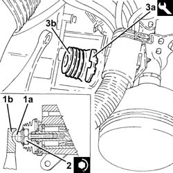
Applies to: engines: 2.0 JTS; all production periods
- Tighten the bolt securing the power unit gearbox side rigid support to the flexible mounting to the recommended torque.
Fastening | Component | Ø | Value (daNm) | |
|---|---|---|---|---|
- | Bolt | GEARBOX SIDE RIGID SUPPORT FOR POWER UNIT | M10 | 4.0 - 5.0, daNm |
1. Connect the electrical connection to the reversing light switch.
2. Connect the electrical connection to the gearbox output speed sensor.
3. Connect the pipe from the electro-hydraulic selection gearbox hydraulic actuation unit (3a), hydraulic unit side and tighten the connector (3b) to the recommended torque.
Fastening | Component | Ø | Value (daNm) | |
|---|---|---|---|---|
3b | Connector | PIPE FROM PUMP/ACTUATOR UNIT | (Actuator unit side) 1.8 - 2.2, daNm |
4. Connect the pipe from the electro-hydraulic selection activation hydraulic unit to the fluid reservoir, hydraulic unit side.
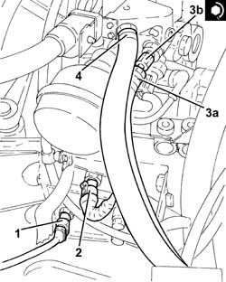
Applies to: engines: 2.0 JTS; all production periods
- Connect the electrical connection for the hydraulic gear activation unit wiring.
- Op. 0010T47 HYDRAULIC SYSTEM FLUID FOR GEARBOX WITH HYDRAULIC SELECTION CHECK LEVEL AND TOP UP IF NECESSARY
- Op. 0010T48 HYDRAULIC SYSTEM FOR GEARBOX WITH HYDRAULIC SELECTION BLEED AIR
- Op. 7055B54 UNDER-ENGINE GUARD - R R
- Op. 7055B90 LEFT FRONT WHEEL ARCH LINER - R.R.
- Op. 4450B02 LEFT FRONT WHEEL R R
- Op. 5530B52 BATTERY DRIP TRAY/SUPPORT - R.R.
- Op. 5530B10 BATTERY - R+R
- Connect the Examiner diagnostic equipment.
- Select "Alfa Selespeed" on the Examiner.
- Select "Control Unit Test" on the Examiner and select "Selespeed Marelli automatic transmission" as the system.
- Press "Active diagnosis" on the Examiner and select "End of line/service autocalibration".
- Follow the procedure described on the Examiner.
Topics linked from this page (7)
- 0010T47 HYDRAULIC SYSTEM FLUID FOR GEARBOX WITH HYDRAULIC SELECTION CHECK LEVEL AND TOP UP IF NECESSARY
- 0010T48 HYDRAULIC SYSTEM FOR GEARBOX WITH HYDRAULIC SELECTION BLEED AIR
- 4450B02 LEFT FRONT WHEEL R R
- 5530B10 BATTERY - R+R
- 5530B52 BATTERY DRIP TRAY/SUPPORT - R.R.
- 7055B54 UNDER-ENGINE GUARD - R R
- 7055B90 LEFT FRONT WHEEL ARCH LINER - R.R.
Topics that link to this page (6)
- 1020D36 FLYWHEEL END OIL SEAL - REPLACE FOR MANUAL GEARBOX WITH HYDRAULIC SELECTION VERSIONS
- 1024B11 ENGINE FLYWHEEL - R R FOR MANUAL GEARBOX WITH HYDRAULIC SELECTION VERSIONS
- 1810A28 CLUTCH - R R FOR MANUAL GEARBOX WITH HYDRAULIC SELECTION VERSIONS
- 1820A24 THRUST BEARING LINKAGE - R + R
- 2110A11 MANUAL GEARBOX WITH DIFFERENTIAL - R R FOR VERSIONS WITH HYDRAULIC SELECTION
- 2110C24 SEALS FOR GEARBOX INPUT SHAFT - R R FOR MANUAL GEARBOX WITH HYDRAULIC SELECTION VERSIONS